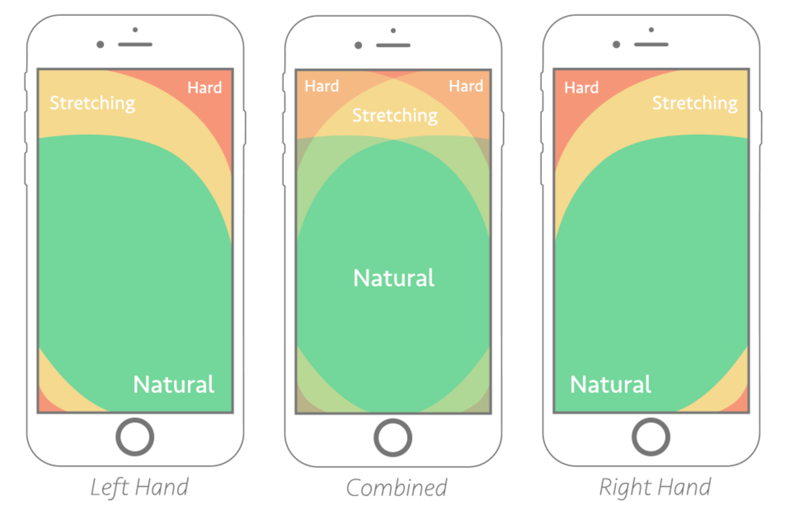
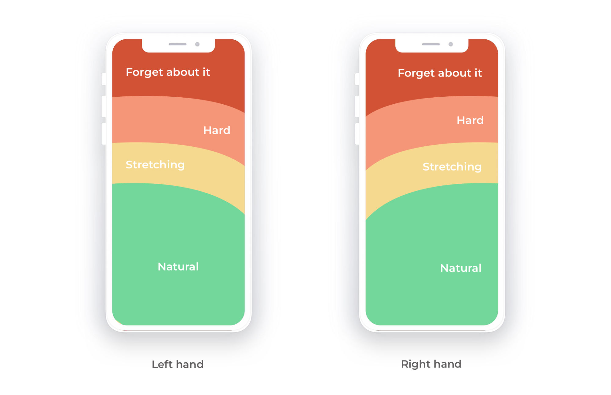
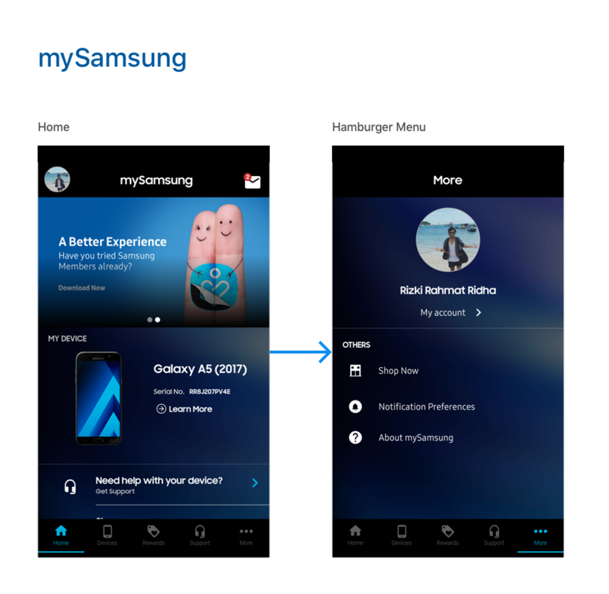

Notes for this week
-
Source: Doing Stuff With Web Things
localStorage
JavaScript’s local storage uses what techies call ‘key-value pairs.’ That’s fancy talk for ‘description-stuff pairs.’ If you’ve ever seen an old fashioned phone book you’ve seen this in action. The ‘key’ would be the name of the person and the ‘value’ would be their address and phone number.
With this example your app should be able to remember, in other words read and write, information gathered from the user. Use this in your apps. Nobody wants to use an app that can’t remember what they already told it
Questions
What is the life cycle of localStorage? Why does it seem to disappear sometimes? How do I clear it? Where is it stored?
-
Source: Javascript: Novice to Ninja
Keep Layers Separate
"It is widely considered best practice to separate the concerns of each layer, so each layer is only responsible for one thing. Putting them altogether can lead to very complicated pages where all of the code is mixed up together in one file, causing ‘tag soup’ or ‘code spaghetti’".
-
Source: Master Mobile UX
Lose Frustration
Remove unnecessary interaction/taps/clicks. Automate things that users don't really need to do for themselves. Put them in archives where they can get them if they need/want to later. (example: expired boarding passes auto-archived)
Speed
Sometimes you can't use an SVG image, as they don't convert well from other image types, so be sure to optimize it and lazy load it. .webp files are very small files, yet great quality images. pixlr.com/x is a great site to convert many image types to .webp type. I don't recall this being mentioned in this course, but I have used this principle before in web design classes.

Reachability
Make anything clickable/tappable appear in the easy to reach areas of one-handed thumbs. See image: bright green area is best.

Forms
Float labels, taller inputs, bigger checkbox/radio button, only get the contact info for preferred: email or phone, with phone, only need number, email, need textarea to collect the info you need, such as quote for what?
Enable autocomplete, save prior inputs, Show passwords, but give “eye” option to hide it.
Card info: use same field that auto advances through the stages of info needed, card# first (auto space like on card for easier readability), then expiration, ccv, zipcode. Use number pad for entering numbers!

Ads
No popups! No ads “above the fold” unless they are unobtrusive. Stationary ad in background with small window to show through.

-
Source: Bottom Navigation Pattern On Mobile Web Pages: A Better Alternative? by Arturas Leonovas
This article has many sources linked!
With original sized screens:

With modern larger screens:
Tap Bar Hybrid
"It might seem like the tap bar is the perfect solution, but it has its problems too. ... It does not work with secondary navigation items. To solve this problem, a hamburger/tap bar hybrid was born. If you pay attention to the Samsung app, you’ll see that the last item on the menu is the “More” button which calls up the hamburger menu.
In essence, the bottom navigation pattern integrates quite well into the tap bar pattern if you want to combine both of them. The best place to look for good examples is in the mobile app world.
